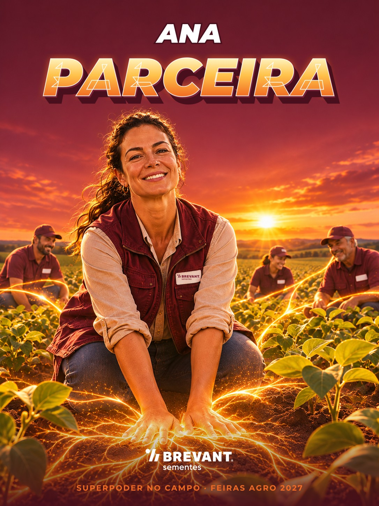
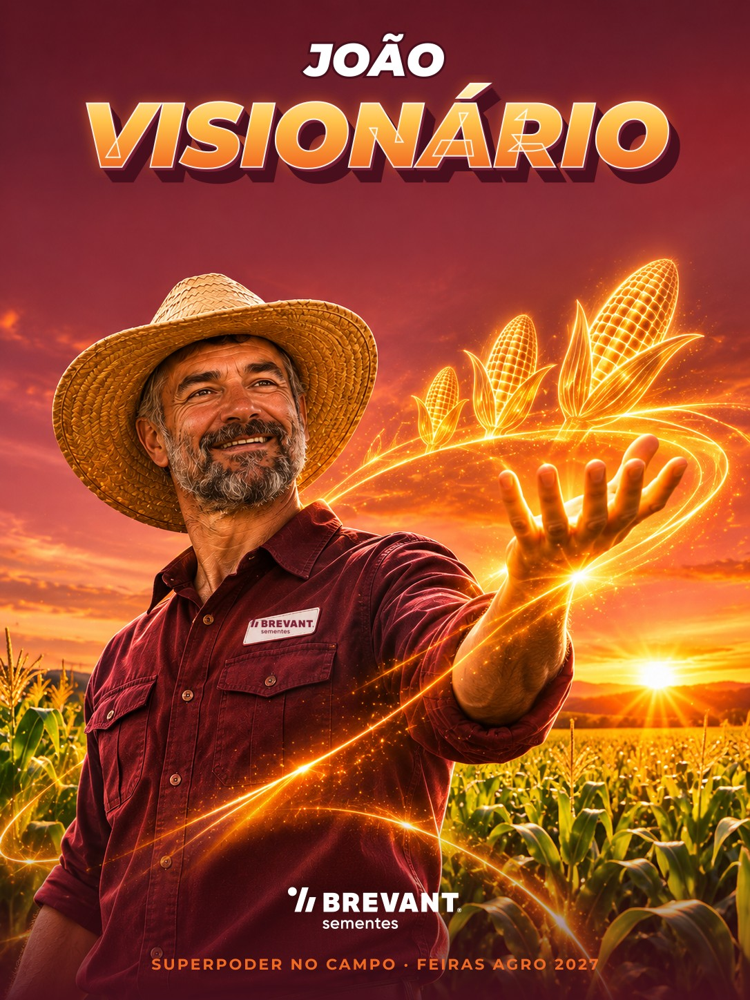
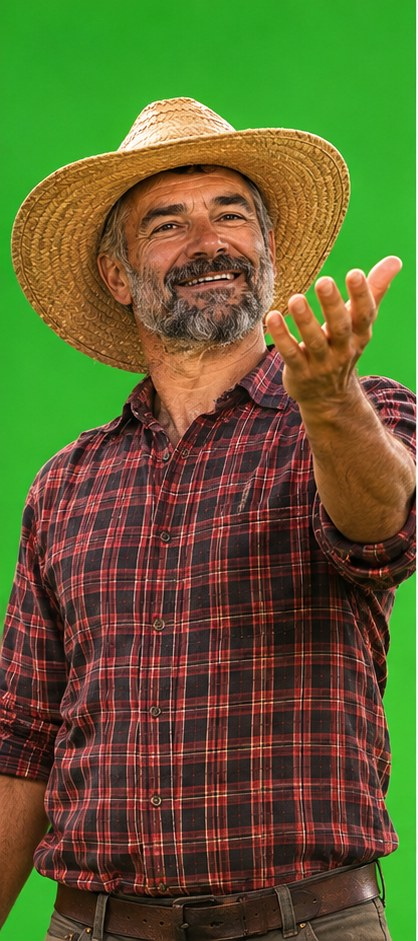
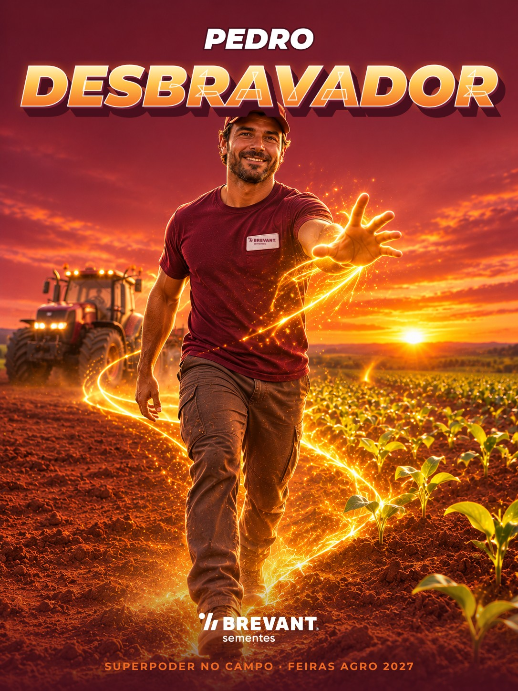
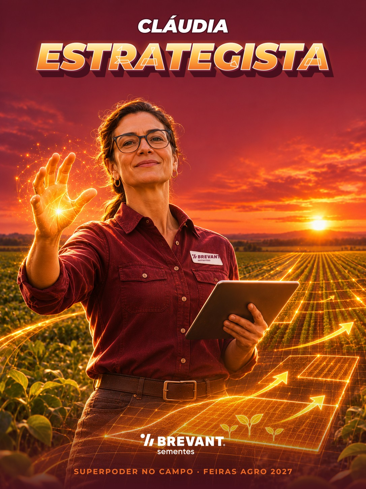
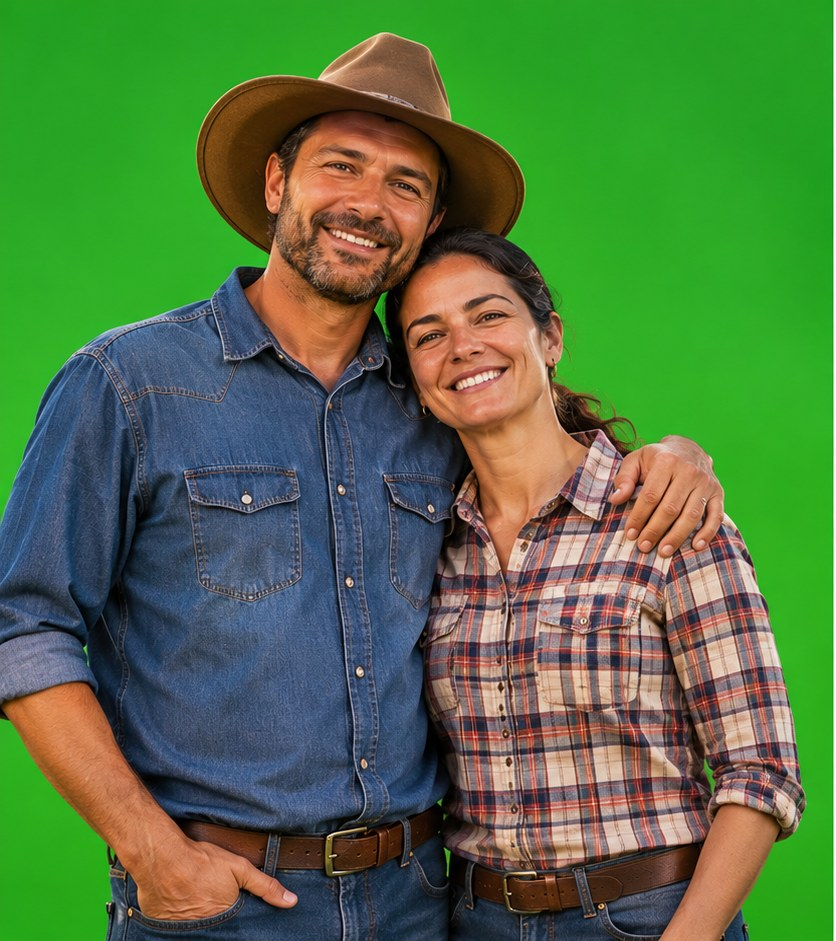
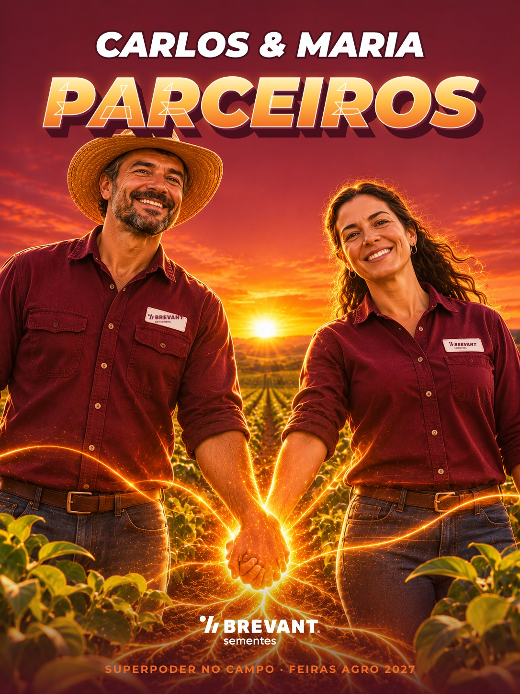
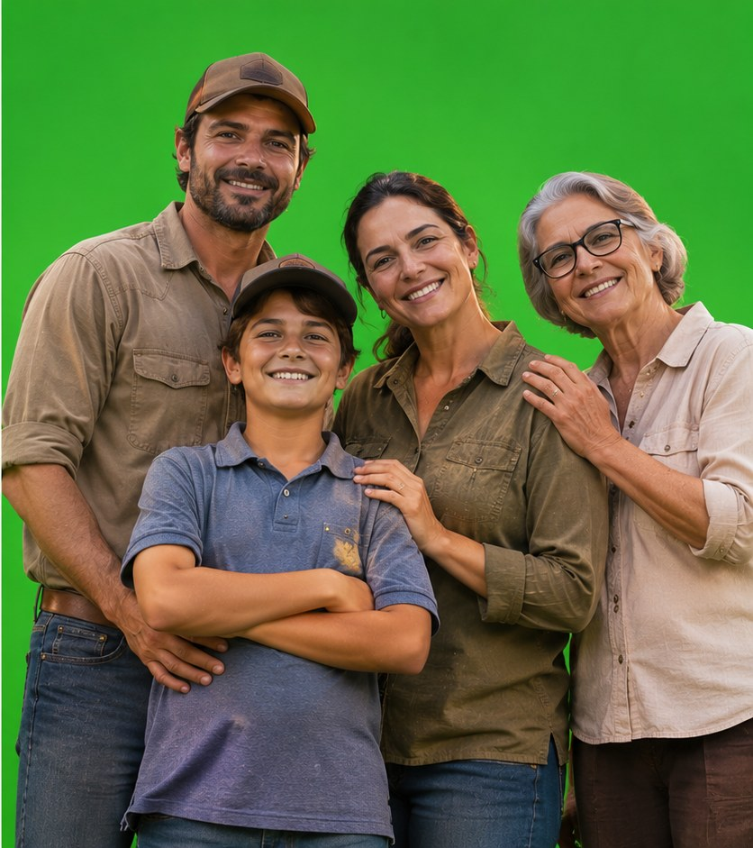
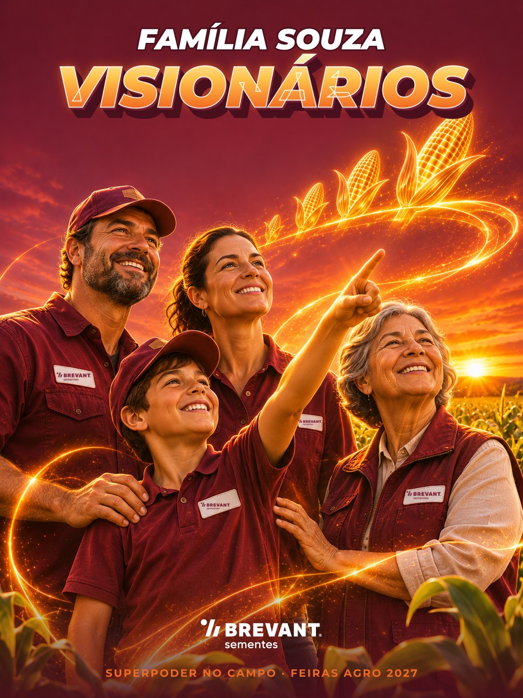

Feiras Agro 2027 · Ativação #03
Superpoder
no Campo
Uma foto no estande. Um pôster de herói do agro. O produtor descobre o seu superpoder e leva para casa com a assinatura Brevant.
Ver a mecânica ↓

Uma foto no estande. Um pôster de herói do agro. O produtor descobre o seu superpoder e leva para casa com a assinatura Brevant.
Ver a mecânica ↓

3 ou 4 perguntas sobre o jeito de trabalhar no campo revelam o superpoder.
Sozinho, em casal ou com a família, no fundo verde do estande.
A foto é o ponto de partida: pose, lavoura e energia são recompostas pelo tema.
Pôster impresso na hora e versão digital por QR Code ou WhatsApp.
Quatro temas, uma mesma lógica visual: energia laranja Brevant, uniforme marsala e a marca dentro da cena.

Antes Antes
Antes Antes
Antes
Pôster Antes
Antes
Pôster
Antes
Pôster
Antes
PôsterRaios e partículas sempre no laranja e dourado da marca.
O produtor veste a marca: camisa, colete ou boné marsala com o logo Brevant.
Nome e superpoder em Montserrat Black, no mesmo tom de voz do estande.
A marca faz parte da composição, não só de uma tarja no rodapé.
Entregue na hora, com nome, superpoder e a marca Brevant.
Por QR Code ou WhatsApp, no formato para Stories.
Cada pôster postado leva Brevant para as redes do produtor e da família.